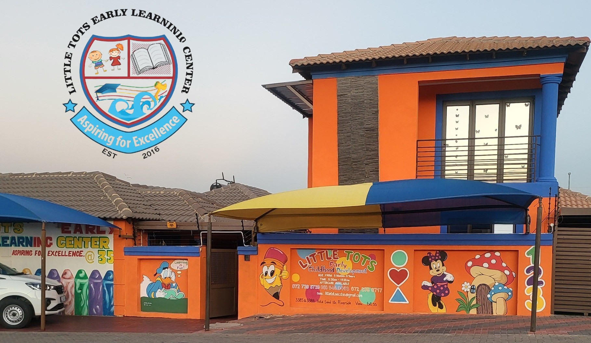

Who We Are
Little Tots is a caring and well-established early childhood development centre dedicated to providing a safe, nurturing, and stimulating environment for young children.
Based in Riverside View, Little Tots operates two fully equipped branches:
- 📍 Riverside View Extension 30
- 📍 Riverside View Extension 35
With over 7 years of experience, we have proudly supported families by laying strong educational and social foundations for their children.

Qualified Teachers
Our children are guided by trained, passionate, and experienced teachers who understand early childhood development.
Safe & Loving Environment
We create a warm, child-friendly space where children feel secure, valued, and encouraged to grow.
Over 7 Years of Trust
For more than seven years, parents have trusted Little Tots to care for and educate their children with excellence.
Find Us
Visit either of our Riverside View branches.